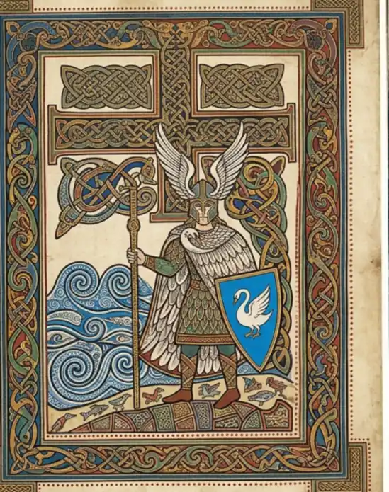
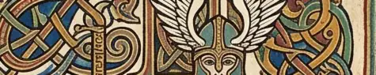
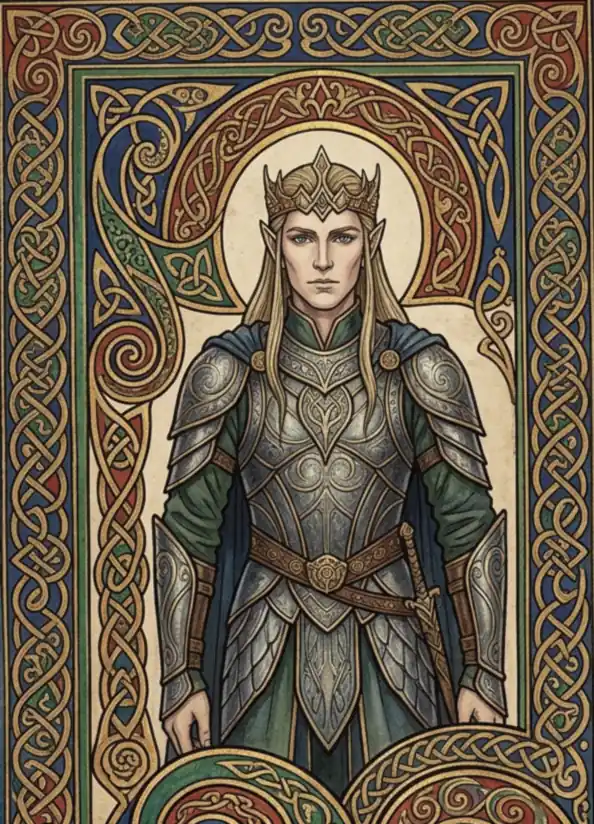
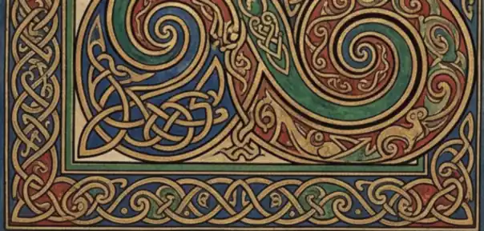
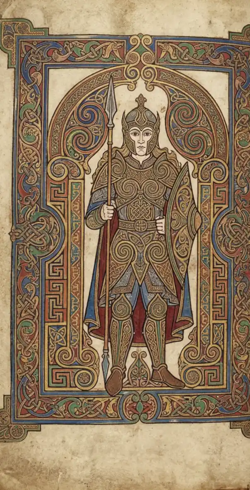
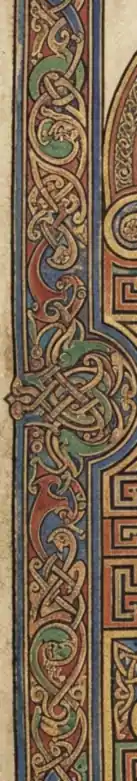

Volume I. Atlas and Realms
where things are
The contents of Volume I of the Arda Archive, Atlas and Realms: 158 leaf-openings in 6 parts.
Open this volume at its first leaf →Part of the Arda Archive — a corpus-first index of Tolkien’s legendarium.

SUPPLIED. The owner's plate, made with an AI tool, published on his own standing authorisation — on his word, not on a licence the file carries. The archive cropped, turned and recoloured it to this leaf. No generator is named: none was named to us. the archive's own record
A·iTuorNOT A SPREAD AND NOT A FOLD. Two separately-rendered panels butted together with a hard black seam at x=630-632 (measured trough depth 110.4, which no crease makes). The left panel is a complete framed leaf: a winged-helm figure with staff and blue swan shield on a stepped-cross carpet ground over blue water, in a fine dotted border on cream. The right panel is the SAME composition rendered again, magnified and more saturated, in a different border. The right is a detail of the left, not a facing page.
DEVICE ATTESTED, SCENE COMPOSED. Tuor's swan-wing helm and the Swan as the device of the House of the Wing are in the texts (Silmarillion ch. 23; The Fall of Gondolin). The corpus does not describe this particular moment on the shore, and it is not offered as one.
Volume I is Atlas and Realms -- 'where things are', and it holds the part called Houses of Gondolin. Tuor's road is the legendarium's great itinerary: Dor-lomin, the Gate of the Noldor, Vinyamar, Nevrast, the Hidden Way and Gondolin. A figure standing on the shore with the sea behind him is a picture of WHERE, which is what Volume I is for.

SUPPLIED. The owner's plate, made with an AI tool, published on his own standing authorisation — on his word, not on a licence the file carries. The archive cropped, turned and recoloured it to this leaf. No generator is named: none was named to us. the archive's own record
A·ijContents
SUPPLIED. The owner's plate, made with an AI tool, published on his own standing authorisation — on his word, not on a licence the file carries. The archive cropped, turned and recoloured it to this leaf. No generator is named: none was named to us. the archive's own record
A·iijFinrodA tall single leaf on a pale ground, the airiest line of the eleven, leaning green and teal with red accents. A crowned golden-haired figure in scale armour stands in an arched interlace frame; a large double-spiral panel runs across the foot of the leaf.
TITLE ATTESTED, PORTRAIT INVENTED. Finrod is lord of Nargothrond -- Silmarillion ch. 13. No description of his face exists in the corpus, and the golden hair, the fillet and the scale armour here are the plate's invention.
Volume I is Atlas and Realms. Finrod founded and ruled Nargothrond, the greatest of the hidden delvings, and Minas Tirith upon Tol Sirion before it. He is placed with the realms because what the archive can actually say about him is mostly WHERE he built.

SUPPLIED. The owner's plate, made with an AI tool, published on his own standing authorisation — on his word, not on a licence the file carries. The archive cropped, turned and recoloured it to this leaf. No generator is named: none was named to us. the archive's own record
A·ivContents
SUPPLIED. The owner's plate, made with an AI tool, published on his own standing authorisation — on his word, not on a licence the file carries. The archive cropped, turned and recoloured it to this leaf. No generator is named: none was named to us. the archive's own record
A·vTurgonThe most convincingly manuscript-like of the eleven: it reads as a photograph of a real insular leaf, with vellum discolouration and a DARK GUTTER SHADOW down the right edge, as though the facing page were still attached. A standing mailed figure with a spear inside an arched frame, key and step panels to either side, restrained blue, red and gold.
TITLE ATTESTED, PORTRAIT INVENTED. Turgon is King of Gondolin -- Silmarillion ch. 15. There is no description of his face in the corpus; the mail, the spear and the arched setting are the plate's own.
Volume I is Atlas and Realms and holds the part called Houses of Gondolin. Turgon is the city: he built it, ruled it for the whole of its hidden life, and would not leave it. The archive's largest single body of place-matter after the Gazetteer hangs off his reign.

SUPPLIED. The owner's plate, made with an AI tool, published on his own standing authorisation — on his word, not on a licence the file carries. The archive cropped, turned and recoloured it to this leaf. No generator is named: none was named to us. the archive's own record
A·vjContentsWhere things are. This volume opens at folio i and runs to folio mcxxii: 561 leaf-openings in 7 parts, of which 554 are a record of one person, place or realm.
The contents of Volume I of the Arda Archive, Atlas and Realms: 158 leaf-openings in 6 parts.
Open this volume at its first leaf →